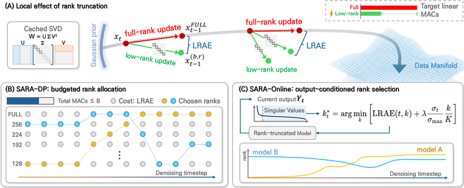
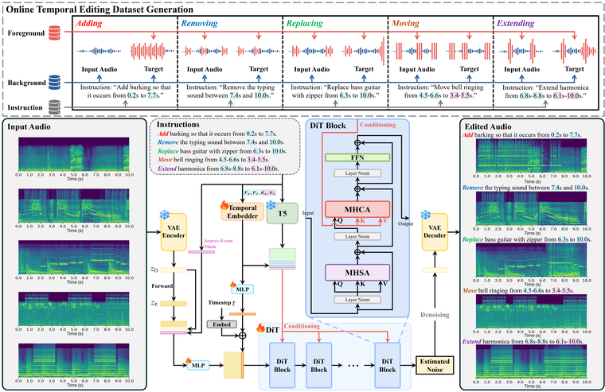
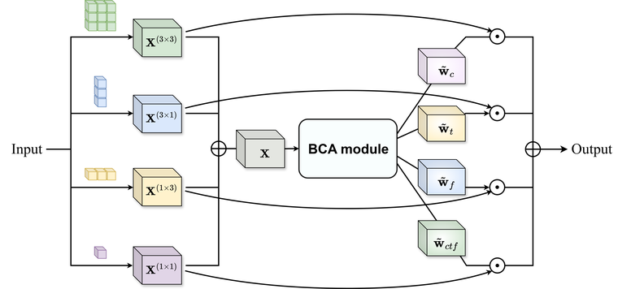

Hello! I am Jinwoo Jung, an M.S. student at Hanyang University, advised by Prof. Joon-Hyuk Chang in the ASML Lab, where I work on diffusion models — controllable generation and efficient inference.
I built an audio editing model that applies an edit only to the time span specified in the instruction and leaves the rest of the recording unchanged (INTERSPEECH 2026, demo), and worked on adapting the rank of each layer per timestep and per block to reduce inference cost without retraining, on both image and audio diffusion models (NeurIPS 2026).
I received a B.S. in Computer Science from Konkuk University, and spent a semester at ZHAW in Switzerland as an exchange student.


